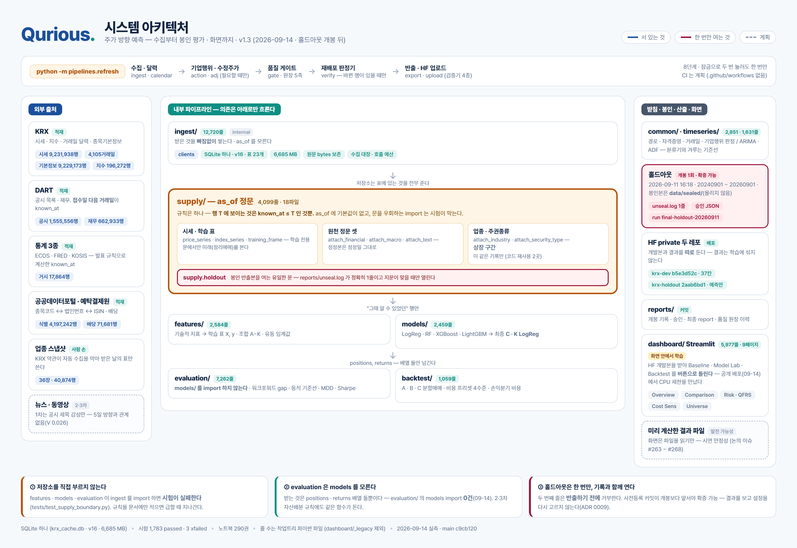

| 구분 | 내용 | 비고 |
|---|---|---|
| 팀명 | Qurious (큐리어스) | Quant + Curious |
| 팀원(역할) | 이동원(팀장) – 데이터 수집·저장·정제, 시점정합 공급 계층, 홀드아웃 개봉 통제, 문서 오준영 – 피처 조합 비교, 모델 학습·선정, 최종 홀드아웃 실행 강민석 – 백테스팅·성과지표, 동적 기준선, Streamlit 대시보드 신장환 – 피처 엔지니어링·기술적 지표·파생 피처, 유동 임계값 | 발표 신장환·강민석 교차 검수 (부록 B) |
| 기간 | 2026.09.01 ~ 2026.09.15 (발표장소 : koreaIT노원 B강의실) | 6주 3개 중 1차 |
| 프로젝트 명 | Qurious (큐리어스) — 맞히는 것보다 어려운 건, 맞혔다고 말해도 되는지 아는 것 ※ 저장소 이름 Alpha_Stack 은 착수 시점의 이름이라 그대로 둔다 | |
| 주제 선정 이유 | ① 개별 기술적 지표(RSI·MACD·이동평균)를 따로 쓰기보다 머신러닝으로 종합했을 때 예측력이 실제로 향상되는지 검증한다. ② 그런데 주가 예측은 “몇 % 맞혔나”보다 “어떻게 검증했나”가 결론을 좌우한다. 우리 자료로 직접 잰 숫자로 말하면 — 개발구간 3,553거래일에서 아무 모델 없이 “늘 중립”이라고만 답해도 38.50%를 맞힌다(중립이 최빈 클래스다). 통계적으로 유의하려면 41.11%가 필요하다 — 단측 α=0.05 에, 5거래일 레이블이 서로 겹쳐 관측이 독립이 아닌 것을 VIF 3.78 로 반영한 값이다. 이길 수 있는 폭이 2.6%p 남짓이라는 뜻이다. 그 좁은 폭은 실수 한 줄로 사라진다. 레이블을 시가(t)→시가(t+5)로 하루 어긋나게 정렬해 봤더니 상관이 정확히 10.0배로 부풀었다(+0.1709 대 +0.0171). 에러는 나지 않는다. 그래서 예측 모델과 성과 검증 엔진을 같은 비중으로 만들었다. ③ 6주 3개 프로젝트가 모두 “개발 및 성과 검증”으로 끝난다. 매 차수 새로 만드는 것은 앞쪽이고 검증하는 방법은 같다. 1차를 세 프로젝트가 공유할 바닥층으로 설계했다. | 숫자는 모두 우리 자료로 잰 값 |
| 프로젝트 목표 | ① 룩어헤드 없는 성과 검증 엔진 — 워크포워드 gap 잠금·거래비용·기준선·사전등록, 봉인한 최근 2년으로 한 번만 최종 평가 ② 지수 트랙 — KOSPI200 의 5거래일 뒤 등락을 상승/보합/하락 3분류로 예측 ③ 종목 트랙 — 업종 시총 상위 10 × 업종별 종목 상위 5에서 확률 랭킹을 매긴다 ④ 5슬리브 중첩 운용 — 같은 모델을 매 거래일 돌려 진입 시점을 다섯으로 나눈다 ⑤ 유동 임계값 — 상승/보합/하락 경계를 변동성·거래량에 맞춰 조정한다 ⑥ 신호→포지션 규칙 — 공매도 없는 {0, +1}, 분할매매 비중을 정한다 ⑦ 모델 4종 동일 조건 비교 — LogisticRegression·RandomForest·XGBoost·LightGBM ⑧ 단일 명령 재현 + Streamlit 시연 화면 | 전부 구현 (부록 A) ④⑤⑥ 팀원 제안 |
| 분석 방법 | ① 수집 — KRX Open API·DART·공공데이터포털·한국은행 ECOS 에서 2010년부터 전수 수집해 SQLite 한 파일(표 23개)에 쌓는다. 지금은 거래되지 않는 913종목을 지우지 않아 생존편향을 막고, 정리매매·거래정지·신규상장 첫날은 학습 표본에서 뺀다 ② 시점 정합 — T일 종가로 판단, T+1 시가에 체결, T+6 시가에 평가. 자료는 as_of 공급 계층을 지나야만 꺼낼 수 있고, 재무·공시는 접수 다음 거래일부터 보인다 ③ 품질 게이트 — 결측·이상치·거래일 달력·봉인 구간 누수를 검사하고, 막는 검사가 하나라도 실패하면 팀 공유 데이터셋 반출이 멈춘다 ④ 피처 — 이동평균·RSI·MACD·볼린저·거래량·변동성을 numpy 로 직접 구현하고, 종목·시기마다 다른 눈금을 맞춘 파생 피처 4개를 더했다. 지표마다 손계산 테스트 ⑤ 레이블 — T+1 시가 → T+6 시가 수익률 3분류. 지수 ±1.0% / 종목 ±2.0% (종목 변동성이 지수의 약 2.1배) ⑥ 종목 선별 — 매 거래일 당시 시총으로 업종 상위 10개, 업종별 KOSPI 보통주 상위 5개를 고른다. 그날까지 받은 업종 정보만 쓴다 ⑦ 모델 — 4종 × 피처 조합을 같은 표본·같은 분할로 비교한다(지수 100후보 · 종목 44후보). 학습 시도는 장부에 남긴다. 전처리는 후보 8개를 통제 실험으로 비교해 원값을 쓴다 ⑧ 검증·선정 — 날짜 단위 expanding 12폴드 · gap 5 · 기준선은 학습구간 최빈 클래스. 선정 순서는 결과를 보기 전에 고정한다(부록 D) ⑨ 최종 평가 — 2024-09-01 이후 약 2년을 봉인했다가, 설정을 커밋으로 고정한 뒤 한 번만 열었다. 다중비교는 대응표본 t·Bonferroni·Deflated Sharpe 문턱으로 함께 보고한다 | 세부는 부록 C·D |
| 예상 산출물 | ① Streamlit 대시보드 9페이지 — 기준선·모델·백테스트·비용 민감도·QFRS 를 한 화면에서. 공개 배포 두 곳(Streamlit Cloud · Hugging Face Space) ② 모델 성능 비교표 — 지수 100후보 · 종목 44후보, 기준선 대비와 다중검정 포함 ③ 최종 홀드아웃 결과 — 2년 478거래일을 한 번 평가한 지표와 매수 후보 (부록 E) ④ 재현 파이프라인 — 수집→검사→반출 한 명령, 최종 평가 한 명령 ⑤ 결과 보고서 · 발표자료 · README · 결정 기록(ADR) 10건 ⑥ 2·3차가 그대로 가져다 쓰는 성과 검증 엔진 · 저장소 github.com/devlee328288/Alpha_Stack | ①이 발표 시연 결과는 부록 E |
부록
계획서에 적은 범위를 필수와 선택으로 나누고, 1차를 마친 상태를 코드와 결과 파일로 확인해 적었다. 필수 열 개는 모두 구현했고, 선택 범위는 만든 것과 하지 않은 것을 함께 적는다.
| 구분 | 범위 | 담당 | 상태 |
|---|---|---|---|
| 필수 | ① 성과 검증 엔진 (워크포워드·거래비용·기준선) | 강민석 | 구현 — gap 이 라벨 지평보다 짧으면 LeakageError evaluation/ 은 models/ 를 import 하지 않는다 |
| 필수 | ② 지수 트랙 — KOSPI200 3분류 | 오준영 | 확정 — 조합 C · LogisticRegression |
| 필수 | ③ 종목 트랙 — 선별 후 랭킹 | 오준영·신장환 | 확정 — 조합 K · LogisticRegression |
| 필수 | ④ 5슬리브 중첩 운용 | 강민석 | 구현 — 매일의 5거래일 예측을 다섯 슬리브로 나눠 일별 성과를 계산한다 |
| 필수 | ⑤ 유동 임계값 (변동성·거래량 스케일) | 신장환·강민석 | 구현 — 6파라미터 동적 기준선 · CMA-ES 탐색 최종 모델 라벨은 고정 밴드(±1.0% · ±2.0%) |
| 필수 | ⑥ 신호→포지션 규칙과 시드 배분 | 신장환·강민석 | 구현 — {0, +1} · 두 트랙 모두 상승일 때 매수 후보 분할매매 A 20-30-50% · B 고정 25% · C 올인/올아웃 |
| 필수 | ⑦ 모델 4종 동일 조건 비교 | 오준영 | 구현 — 지수 100후보 · 종목 44후보(11조합 × 4) 학습 시도 기록 17,388행 |
| 필수 | ⑧ 수집·품질 게이트·공급 계층 | 이동원 | 구현 — 일별시세 9,231,938행 표 23개 · 검사가 실패하면 반출이 멈춘다 |
| 필수 | ⑨ 봉인 홀드아웃 1회 평가 | 이동원·오준영 | 완료 — 개봉 기록 1줄 · 판정 ‘확증 가능’ (부록 E) |
| 필수 | ⑩ Streamlit 시연 화면 | 강민석 | 구현 — 9페이지 · 공개 배포 두 곳 |
| 선택 | ⑪ 시장 균열 스코어 | 신장환 | 균열 스코어 자체는 만들지 않았다 시장 내부 상태 피처 5칸(상승 종목 비율 · 200일선 위 비율 · TRIN 등)은 만들었고 최종 조합에는 넣지 않았다 |
| 선택 | ⑫ 공시 제목 텍스트 신호 | 이동원 | 구현 — 5일 방향과 연관이 거의 없어(크래머 V 0.026) 피처로 넣지 않았다 |
| 선택 | ⑬ Keras LSTM/GRU 비교 | 오준영 | 하지 않았다 — 같은 검증 엔진에 붙일 수 있다 |
| 선택 | ⑭ 버튼 갱신 파이프라인 | 이동원·강민석 | 구현 — 수집→검사→판정→HF 한 명령 · 잠금 |
| 2·3차 계약 | ⑮ 비LLM 에이전트 관측 규격 (W×F 배열) | 이동원 | 명세만 — 2·3차가 데이터 코드를 고치지 않고 붙는 자리 |
| 선택 | ⑯ GitHub Actions 검사용 CI | 이동원 | 도입하지 않았다 — 검사는 사람이 실행한다 |
아래 담당은 “무엇을 했는지 말할 수 있게” 나눈 것이지 벽을 세운 것이 아니다. 각자 자기 영역을 끌고 가되 옆 담당의 산출물을 한 번 더 확인했다.
| 영역 | 주담당 | 교차 검수 | 산출물 |
|---|---|---|---|
| 데이터 수집·정제·시점정합 | 이동원 | 신장환 | SQLite 표 23개 · as_of 공급 계층 · 품질 검증기 팀 데이터셋 반출 · 홀드아웃 개봉 기록 |
| 피처 엔지니어링·기술적 지표 | 신장환 | 오준영 | 원자 지표 · 파생 피처 4개 · 유동 임계값 손계산 테스트 |
| AI 모델 개발·학습 | 오준영 | 강민석 | 조합 비교(지수 100 · 종목 44) · 최종 C·K 홀드아웃 실행기 |
| 백테스팅·성과지표·대시보드 | 강민석 | 이동원 | 동적 기준선 · 분할매매 A/B/C · 비용 민감도 대시보드 9페이지 |
① 모든 코드는 Pull Request 로 병합하고 교차 검수자가 한 번 더 확인한다.
② 자신이 만든 기능은 팀 회의에서 5분 안에 설명할 수 있어야 한다. 설명하지 못하는 코드는 병합하지 않는다 — 도구를 쓰는 것은 자유이나 결과를 아는 것은 책임이다.
③ 파트 경계를 넘어야 할 때는 먼저 담당자에게 묻고, PR 본문과 문서에 왜 넘었는지 남긴다.
④ 주요 결정은 한 장짜리 기록(ADR)으로 남긴다 — 무엇을, 왜, 어떤 대안을 버렸는지. 1차에서 10건을 남겼다.
⑤ 발표는 신장환·강민석이 함께 한다.
자료는 반드시 시점정합 공급 계층을 지나야 모델에 들어간다. 이 문을 지나지 않는 조회는 테스트가 막는다. “그때 알 수 있었던 것”만 모델에 들어가게 하는 구조적 장치다. 홀드아웃을 여는 문은 따로 하나이고, 열 때마다 기록이 한 줄 남는다.

모든 자료는 SQLite 한 파일(표 23개 · 스키마 v16)에 쌓고, 팀원에게는 개발구간(~2024-08-31)만 잘라 Hugging Face 비공개 저장소로 나눴다. 원자료는 코드 저장소에 두지 않는다. 행 수는 2026-09-14 에 DB 를 읽기 전용으로 열어 셌다.
| 자료 | 규모 | 기간 | 출처 |
|---|---|---|---|
| 일별시세 (수정주가 · 총수익) | 9,231,938행 | 2010-01-04 ~ 2026-09-04 | KRX Open API · FinanceDataReader |
| 종목기본정보 (그날 기준) | 9,229,173행 | 2010-01-04 ~ 2026-09-03 | KRX Open API |
| 종목 식별 (법인등록번호 · ISIN) | 4,197,242행 | 2020-01-02 ~ 2026-08-31 | 공공데이터포털 |
| 공시 목록 | 1,555,556행 | 2010-01-04 ~ 2026-09-04 | DART |
| 재무제표 | 662,933행 | 접수 2015-09-23 ~ 2026-08-14 | DART |
| 지수 | 196,272행 | 2010-01-04 ~ 2026-09-04 | KRX Open API |
| 배당 | 71,681행 | ~ 2026-09-03 | 공공데이터포털 |
| 기업행위 사건 | 44,290행 | ~ 2026-09-04 | 시세·종목기본정보에서 판정 |
| 업종 스냅샷 (사람이 받은 36장) | 40,874행 | 2024-01 ~ 2026-09 | KRX 화면 — 약관상 자동 수집 금지 |
| 거시지표 | 17,864행 | 2009-08 ~ | 한국은행 ECOS |
각 자료가 어느 날부터 보이는지를 자료마다 정해 두었다. 자료를 꺼내는 함수는 as_of 에 기본값이 없어 빠뜨리면 멈춘다.
| 자료 | 그 행에서 보이기 시작하는 날 |
|---|---|
| 시세 | T일 종가로 판단하고 T+1 시가에 체결한다 — 라벨도 T+1 시가 → T+6 시가 |
| 재무 | DART 접수일 다음 거래일 · 정정본은 정정 접수일 |
| 공시 제목 | 접수일 다음 거래일 |
| 거시 | 발표 규칙으로 보수적으로 계산한 날 (ECOS 가 발표일을 주지 않는다) |
| 업종 · 주권종류 | 스냅샷 다음 거래일 · 그날까지 받은 것 중 가장 최근 하나 |
※ 일부러 틀리게 붙인 대조군과 비교했다 — 결산기 끝 날짜로 붙이면 23.2%, 원본 최초 접수일로 붙이면 9.1% 의 행이 그날 알 수 없던 재무 보고서를 봤고, 공급 계층은 0행이었다.
※ 생존편향 — 수집 마지막 날(2026-09-04) 기준 3,678종목 중 913종목(24.8%)이 그 전에 거래가 끊겼고 지우지 않았다(개발구간 안에서 끊긴 종목 750). 대신 가격제한폭이 없는 정리매매 구간, 체결이 없는 거래정지 행, 신규상장 첫날은 학습 표본에서 뺀다. 폐지 종목을 넣었더니 실제로는 체결될 수 없는 급락 봉이 반대 방향의 편향을 만들었기 때문이다.
※ 이상치는 크기로 자르지 않는다. 거래소 등락률과 어긋나는 행과 실제로 일어난 극단 사건(권리락·거래정지 해제 등)을 칸으로 구분해 표시한다. 종목코드가 재사용된 자리에서 앞 회사 기록이 붙던 행(개발구간 74 · 홀드아웃 187)은 상장 구간 판정으로 0 으로 만들었다.
라벨은 개인이 실제로 체결할 수 있는 시점에 맞췄다. 종가를 보고 나면 장이 끝나 있으므로 T일 종가로 판단하고 T+1 시가에 사서 T+6 시가에 평가한다. 공매도는 개인이 실행하기 어려워 하락 예측은 “보유하지 않음”으로만 실행한다.
| 항목 | KOSPI200 | 개별종목 |
|---|---|---|
| 예측 지평 | 5거래일 | 5거래일 |
| 진입 · 평가 | T+1 시가 → T+6 시가 | T+1 수정시가 → T+6 수정시가 |
| 중립대 | ±1.0% | ±2.0% — 변동성이 지수의 약 2.1배 |
| 포지션 | {0, +1} — 공매도 없음 | {0, +1} |
| 결정 기록 | ADR 0002 | ADR 0006 |
최종 피처 조합. 개별종목은 열한 조합 × 모델 4종을 같은 표본에서 비교했고, 열한 조합 중 여덟에서 LogisticRegression 이 가장 좋았다. 피처 수와 성적 사이에는 관계가 없었다(스피어만 ρ=−0.05, p=0.88) — 개수가 아니라 어떤 축을 담았는지가 갈랐다.
| 트랙 · 조합 | 피처 | 무엇을 재나 |
|---|---|---|
| KOSPI200 조합 C · 6개 | sma_gap_5_20 · macd_hist_ratio | 추세의 방향과 강도 |
| rsi_14 · bb_position | 과매수·과매도 · 볼린저밴드 안 위치 | |
| hv_20 · vol_ratio_20 | 20일 변동성 · 평소 대비 거래량 | |
| 개별종목 조합 K · 14개 | atr_ratio · bb_bandwidth · hv_regime · hv_20 | 변동성의 크기와 국면 |
| five_day_return · daily_return · relative_ret_5_market | 최근 수익률 · 시장 대비 성과 | |
| sma_gap_5_20 · sma_gap_20_60 · macd_hist_ratio | 단기·중기 추세 | |
| rsi_14 · bb_position | 과매수·과매도 · 위치 | |
| vol_ratio_20 · obv_slope_20 | 거래량 |
모델을 고르는 순서와 최종 설정은 홀드아웃을 열기 전에 커밋으로 고정했다.
| 항목 | 값 |
|---|---|
| 후보 모델 | LogisticRegression · RandomForest · XGBoost · LightGBM |
| 후보 수 | KOSPI200 100개 · 개별종목 44개 (11조합 × 4모델) |
| 분할 | 날짜 단위 expanding 12폴드 · 최초 학습 750거래일 · 검증 60거래일 · gap 5 KOSPI200 표본 밖 검증 2014-02-17 ~ 2024-08-22 · 720거래일 |
| 기준선 | 폴드마다 학습구간 최빈 클래스를 검증구간 전체에 예측한 정확도 검증구간 최빈 비율은 정답을 본 값이라 선정에 쓰지 않는다 |
| KOSPI200 선정 | 관문 — 기준선 대비 정확도 > 0 이고 기준선을 이긴 폴드 7/12 이상 → 상승 PR-AUC → 비용 차감 ΔSharpe(폴드 중앙값) → 상승 Precision |
| 개별종목 선정 | 기준선 대비 정확도 → Macro F1 → 기준선을 이긴 폴드 수 (ADR 0007) |
| 전처리 | 후보 8개를 12폴드 통제 실험으로 비교 → 원값 유지 모델 안 StandardScaler 는 폴드의 학습 행으로만 맞춘다 |
| 개봉 전 고정 | class weight 두 트랙 모두 balanced · KOSPI200 상승 임계 0.3375 두 트랙이 모두 상승일 때만 매수 후보 · 설정 지문 5299a08f (ADR 0009) |
| 홀드아웃 | 2024-09-01 이후 약 2년 봉인 (ADR 0005) 결과를 본 뒤 모델·피처·임계값을 다시 고르지 않는다 (ADR 0007) |
※ KOSPI200 선정에서 정확도 관문을 빼고 상승 PR-AUC 만 보면 1위가 조합 E 로 바뀔 수 있다. 관문의 7/12 는 통계적 유의성 문턱이 아니라 저성능 후보를 거르는 최소 운영 안정성 기준이다. 선정 축이 결론을 바꿀 수 있으므로 어느 축으로 골랐는지를 결과와 함께 적는다.
평가 2024-09-02 ~ 2026-08-24 (478거래일). 2026-09-11 에 팀 합의로 봉인을 한 번 열고(reports/unseal.log 기록 1줄), 개봉 전에 커밋한 설정(ADR 0009) 그대로 한 번 실행했다. 사전등록이 개봉보다 앞서 판정은 ‘확증 가능’이다. 봉인 끝을 2026-09-01 로 둔 것은 그 뒤 사흘의 수정주가가 계산 전이었기 때문이다.
| 지표 | KOSPI200 · 조합 C | 개별종목 · 조합 K |
|---|---|---|
| 평가 표본 | 478거래일 | 23,567건 |
| 정확도 | 0.4331 | 0.3807 |
| 같은 기간 기준선 (평가구간 최빈 = 상승) | 0.5460 (261 / 478) | 0.3655 (8,614 / 23,567) |
| 기준선 대비 | −11.30%p | +1.52%p |
| Macro F1 | 0.3126 | 0.3740 |
| Balanced accuracy | 0.3285 | 0.3741 |
| MCC | −0.0114 | 0.0585 |
| 하락 재현율 | 0.1087 | 0.4498 |
| 상승 Precision | 0.5415 (176 / 325) | 0.3846 (3,420 / 8,893) |
| 매수 후보 (두 트랙 모두 상승) | — | 7,397 / 23,567건 |
· 개별종목은 같은 기간 기준선을 +1.52%p 넘었다. KOSPI200 은 평가구간의 54.6% 가 상승이었고, 모델은 그 기준선을 넘지 못했다(MCC −0.01). 결과를 본 뒤 모델·피처·임계값을 다시 고르지 않았다.
· 기준선은 같은 기간 안에서 잰다. 개발구간 기준선(KOSPI200 0.3972 · 개별종목 0.3969)과 홀드아웃 정확도를 나란히 놓으면 기간이 섞여 결론이 뒤집힌다.
· 선정 근거였던 개발구간 표본 밖 성적은 기준선 대비 KOSPI200 +5.69%p(12폴드 중 7승) · 개별종목 +2.43%p(10승)였다. 다만 다중비교 보정은 둘 다 통과하지 못했다 — KOSPI200 은 100후보 중 1위의 대응표본 t=1.01 (단측 p=0.167), 개별종목은 44후보 중 Bonferroni 를 통과한 후보가 없다. 개발구간 1위는 미리 정한 기준에 따른 선택이지 통계적 우위가 확정된 모델이 아니다.
· 마지막 한 구간(ADR 0010) — 개봉 뒤 자료로 다시 학습해 판단일 2026-08-24 의 T+1 → T+6 을 예측했다. KOSPI200 상승 예측·적중, 개별종목 50종목 정확도 0.52, 매수 후보 33건. 표본이 하루라 2년 결과와 섞지 않고 확증이라 부르지 않는다.
· 비용 차감 수익률 · Sharpe · MDD 는 백테스트 파트의 홀드아웃 결과를 기다린다. 그래서 위 표는 분류 성능까지다.
2026년 8월 Artificial Intelligence Review 에 실린 QFRS 는 AI 기반 금융 예측·트레이딩 연구가 지켜야 할 7개 보고 표준이다. 저자가 Scopus 색인 논문 41편을 감사했더니 7개를 모두 충족한 논문이 한 편도 없었다(평균 4.22개). 특히 경제적 백테스트는 87.8%가, 인과적 스케일링은 68.3%가 실패했다.
이 프로젝트의 논지가 “어떻게 검증했나”이므로 그 기준을 그대로 가져와 우리 현황을 표로 놓는다. 6개 충족 · 1개 부분이다.
| 기준 | 논문이 요구하는 것 | 우리 현황 | 근거 |
|---|---|---|---|
| QFRS-1 Dataset specification and data handling | 출처·버전·기간 명시. 주식이면 상장폐지 종목 포함 여부와 처리 방법을 밝혀 생존편향을 통제할 것 | 충족 | KRX Open API 등 · 2010-01-04~2026-09-04 · 일별시세 923만 행 중도 소멸 913종목 포함 · 가격·총수익 두 축(배당 71,681행) |
| QFRS-2 Labeling (ground truth construction) | 레이블 정의와 임계값을 명시. 아주 작은 등락을 맞히는 이진분류는 통계적으로만 맞고 경제적으로 무의미하다고 지적 | 충족 | 시가(t+1)→시가(t+6) 3분류 밴드를 실측으로 정함 (지수 ±1.0% / 종목 ±2.0%) |
| QFRS-3 feature engineering (anti-leakage by design) | 피처가 미래를 보지 않도록 설계 단계에서 차단할 것 | 충족 | as_of 공급 계층 — 기본값이 없어 빠뜨릴 수 없다 틀린 대조군은 23.2% · 9.1% 가 새고 공급 계층은 0 |
| QFRS-4 Scaling / Normalisation | 스케일링을 전체 자료에 먼저 적용하면 누수. 학습구간에서 fit 하고 검증·테스트에 transform 만 할 것 | 충족 | 전 구간 fit 은 쓰지 않는다. 시계열 스케일링은 폴드 안 Pipeline. 전처리 후보 여덟을 12폴드로 재 보니 어느 것도 원값을 넘지 못했다(최선 +0.15%p·p=0.535, 최악 업종 중립화 −3.47%p). 최종 경로는 '전처리 없음' 이다 — 라벨이 절대 밴드라 수준이 정보다 |
| QFRS-5 Train/Validation/Test split | 레이블이 h 기간 앞을 보면 창 사이에 최소 h 만큼 embargo | 충족 | 워크포워드가 gap=5 를 강제하고 최근 2년을 봉인했다. ⚠️ 청산이 T+6 이라 학습 마지막 행과 평가 첫날이 하루 겹친다 (부록 G) |
| QFRS-6 evaluation metrics and task types | 주 지표로 MCC·PR-AUC·Balanced Accuracy·혼동행렬. F1·ROC-AUC 는 보조 | 충족 | 홀드아웃 결과에 MCC · 클래스별 PR-AUC · Balanced accuracy · 혼동행렬을 모두 기록하고 같은 기간 기준선 대비로 보고한다 |
| QFRS-7 Backtest metrics (economic performance) | 수수료·슬리피지·체결 규칙을 밝힌 경제적 백테스트. 필수(M) 항목이 하나라도 없으면 Fail | 부분 | 체결 규칙(T+1 시가) · 거래비용 4수준 · 손익분기 비용 · 5슬리브 성과 계산은 있다. 홀드아웃 구간 비용 차감 성과는 보고 대기 |
QFRS-4 를 채우는 과정에서 표준을 그대로 옮기면 안 된다는 것을 실측으로 확인했다. 퀀트 표준의 횡단면 winsorize + z-score 를 걸었더니 기준선 대비 정확도가 1.58%p 떨어졌다. 우리 라벨이 절대 ±2% 밴드라 변동성 수준이 라벨의 절반을 설명하는데(hv_20 십분위와 비중립 비율의 스피어만 상관 1.0000) 날짜별 z-score 가 그 수준을 지우기 때문이다. 대안 여덟을 12폴드 통제 실험으로 재고 전부 기각했다. 표준이 틀린 것이 아니라 그 표준이 전제하는 상대 목표와 우리 라벨이 다르다.
그 과정에서 손실의 구조도 갈랐다. 중립화는 회귀 설계행렬에 늘 절편이 들어가므로 어느 축을 지우든 그날 평균이 먼저 지워진다. 업종 라벨을 무작위로 섞어 자유도만 같게 만든 대조군을 세우면, 업종 중립화의 손실 3.47%p 는 날짜 수준 48% · 자유도 33% · 업종 정보 19% 로 나뉜다. 같은 연산이 정보계수 안정성(ICIR)은 9.5% 올리고 정확도는 3.47%p 낮췄으므로, 결론에는 어느 축으로 판정했는지를 함께 적는다.
출처: Khushi M. QFRS: quantitative finance reporting standards for forecasting, evaluation and trading claims. Artif Intell Rev (2026). https://doi.org/10.1007/s10462-026-11664-w
※ 이 논문은 온라인 선공개(accepted manuscript) 상태라 권·호·페이지가 아직 없다. 위 형식이 원문이 지정한 인용 방식이다. Open Access(CC-BY)라 전문을 볼 수 있다.
알면서 아직 닫지 못한 것을 적는다. 이 목록이 비어 보이는 프로젝트는 대개 재 보지 않은 것이다. 발전 방향은 팀 문서에 이미 적힌 것만 옮겼다.
| 무엇 | 지금 | 발전 방향 |
|---|---|---|
| KOSPI200 트랙이 같은 기간 기준선을 넘지 못했다 | 상승이 54.6% 인 2년에서 정확도 0.4331 · MCC −0.01 | 결과를 보고 설정을 바꾸지 않는다. 바꾸려면 다음 실험으로 분리해 새로 사전등록한다 (ADR 0007) |
| 다중비교 보정을 통과한 후보가 없다 | 개발구간 1위는 100후보 · 44후보 중 최댓값 | 숫자를 낼 때 시행 횟수를 함께 적는다 (학습 시도 기록 17,388행) |
| gap 5 와 T+6 청산이 하루 겹친다 | 학습 마지막 행(2024-08-23)의 청산일 = 평가 첫날(2024-09-02) | 다음 봉인에서는 gap 을 라벨 지평(6)과 맞춘다 |
| 비용 차감 성과가 아직 없다 | 홀드아웃은 분류 지표까지 확정 | 최종 예측 파일을 백테스트에 넣어 수익률 · Sharpe · MDD 를 보고한다 |
| 대시보드가 화면 안에서 학습한다 | 무료 CPU 에서 제한 · 재시작하면 결과 캐시가 사라진다 | 미리 계산한 결과를 읽기만 하는 화면 |
| 비교 기준 · 비용 규격이 하나로 묶이지 않았다 | 동적 기준선과 모델 라벨의 밴드가 다르다 | 공통 지표 · 비용 규격을 정해 비교표를 한 기준으로 |
| 지수 구성종목 변경 편향 | KRX Open API 에 구성종목 이력이 없어 크기를 잴 수 없다 | 구성종목 이력을 확보하면 같은 검증 엔진으로 잰다 |
세 차수의 주제가 모두 “개발 및 성과 검증”으로 끝난다. 매번 새로 만드는 것은 앞쪽이고 검증하는 방법은 같다. 1차에서 검증 엔진과 데이터 계층을 재사용 가능하게 분리해 두었으므로, 2·3차는 아래 자리에 붙는다.
| 차수 | 무엇을 새로 만드나 | 1차에서 그대로 가져가는 것 | 데이터 계층에서 붙는 자리 |
|---|---|---|---|
| 1차 | 지표 기반 등락 예측 + 성과 검증 엔진 | — | as_of 공급 계층 · 팀 데이터셋 반출 · 갱신 파이프라인 · 텍스트 신호(공시 제목) |
| 2차 | 한 종목 신호를 여러 종목 배분으로 넓힌다 (비LLM 에이전트 · 강화학습 후보) | 검증 엔진 · 수집 계층 · 시점정합 규칙 | 관측 배열 규격 (W×F) — 환경이 그대로 읽는다 · 재무 · 거시 · 공시 피처 |
| 3차 | 기성 지표(RSI·MACD) 자리를 우리가 만든 지표로 바꾼다 | 검증 엔진 · 피처 계약 · 실험 기록 규약 | 텍스트 신호 확장(본문) · 대안데이터 팩터 게이트 |
※ 하락 예측을 실제 포지션으로 쓰는 {−1, 0, +1} 은 선정 기준부터 새 ADR 로 정한다. KOSDAQ 으로 넓힐 때는 반출본에 이미 있는 스팩·관리종목 구분 칸을 유니버스에 적용한다.